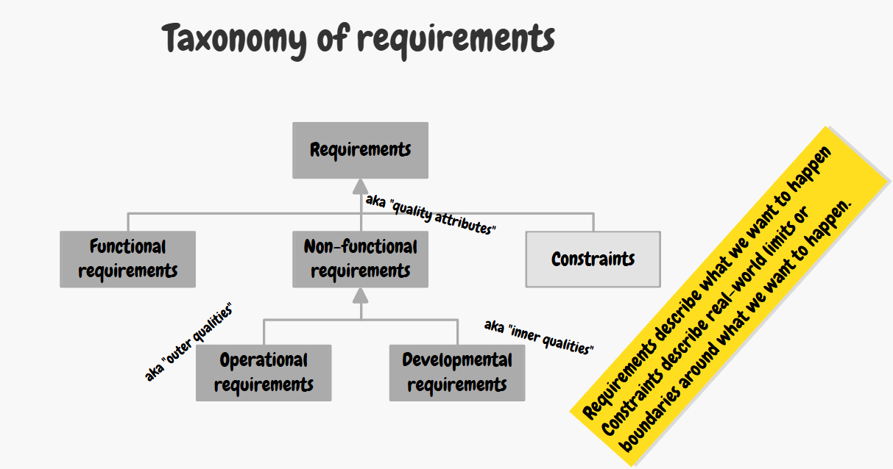

Classification of requirements
A thorough understanding of the nature of requirements is a necessity for an architect. Requirements are primarily divided into three strictly separated categories:
- Functional Requirements (FR): Simply put: What the system does. They describe the behaviour of the system, its functions, business logic, and interaction with the user. (E.g., "The system shall allow the user to add items to a shopping cart.")
- Non-Functional Requirements (NFR / Quality Attributes): Simply put: How well the system performs its functions. They determine system characteristics such as performance, security, and reliability. NFRs shape the architecture far more than FRs.
- Constraints: These are guardrails that are not up for discussion. Constraints directly cut down the "Solution space." They include a technology stack mandated by the client ("It must run on AWS"), existing company directives, legislative laws (GDPR), fixed launch deadlines, or maximum budget.
Classification of NFRs by impact (Operational vs. Developmental):
From the SWA's perspective, it is critical to distinguish NFRs by when they manifest and who their primary stakeholders are:
- Operational ("Outer qualities"): The effect manifests at system runtime. It is immediately felt by end users or the operational IT department (Ops). This includes Performance, Availability, and Usability.
- Developmental ("Inner qualities"): The effect manifests primarily during development and maintenance. Regular users do not see them. This includes Maintainability, Portability, and Testability. The architect is the primary advocate and stakeholder for these developmental qualities, because business stakeholders tend to ignore them until the project becomes too expensive due to poor maintainability.

Practical examples of failure (What happens when an NFR is missing):
Neglecting certain categories leads to typical problems:
- The system cannot be started on the customer's platform → Flexibility / Adaptability was neglected.
- Bug fixes take an unreasonably long time and the code is hard to read → Maintainability was neglected.
- Competing systems respond much faster → Performance efficiency was neglected.
- The product is complex to operate → Interaction capability (Usability) was neglected.
- Localizing to another language would cost millions → Adaptability was neglected.